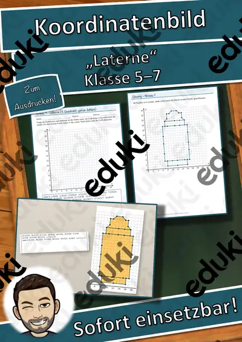
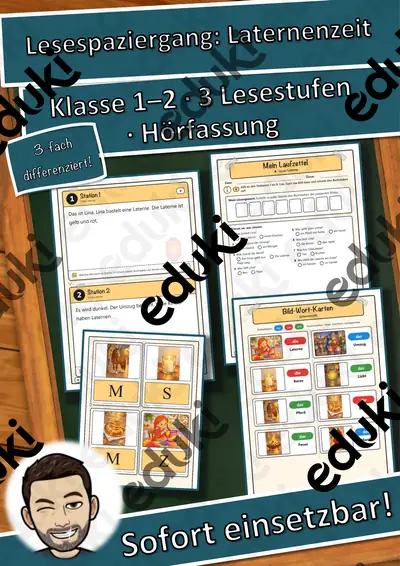
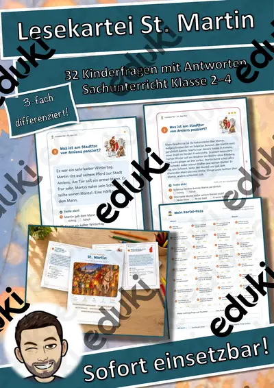
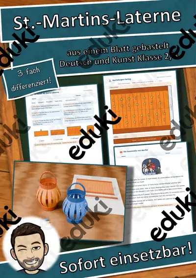
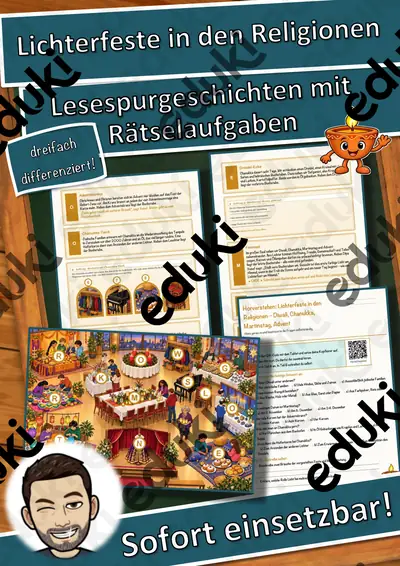
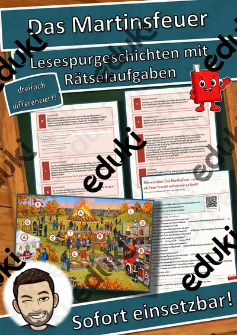
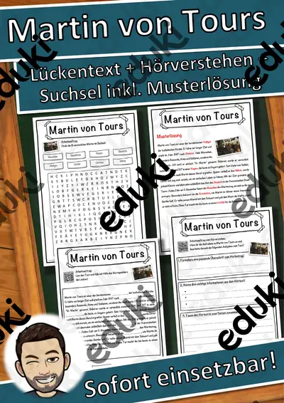

Koordinatenbild Laterne: Punkte eintragen, verbinden, Bild entdecken, Klasse 5–7

Rechenmosaik Paket Herbst und St. Martin: 3 Motive, lösen – kleben – ausmalen (Klasse 1–4)

Rechenmosaik Laterne: Einmaleins 2er bis 5er und 10er – lösen, kleben, ausmalen in 3 Stufen (Klasse 2)

Lesespaziergang Laternenzeit: Linas Laterne – 8 Stationen in 3 Lesestufen mit Hörfassung (Klasse 1–2, DaZ)

Lesespaziergang DaZ: Sankt Martin – Wortschatz mit Rätseln, 3-fach differenziert (Klasse 1–4)

Materialpaket Feste im Winter für die 2. Klasse: 6 Lesespurgeschichten mit Rätselaufgaben (Sankt Martin, Nikolaus, Advent, Weihnachten & Silvester)

Lesekartei St. Martin – 32 Kinderfragen mit Antworten in 3 Stufen (Klasse 2–4)

St.-Martins-Laterne aus einem Blatt – falten, einschneiden, rollen, mit Martinsgeschichte, 3-fach differenziert (Klasse 2/3)

Fensterlaterne Sankt Martin – Laterne basteln mit Lesetext zur Legende, 3-fach differenziert (Klasse 1–3)

Materialpaket Herbst-Lesespuren für die 3. Klasse: 7 Lesespurgeschichten mit Rätselaufgaben (Kürbis, Igel, Laterne, Halloween & mehr)

Lesespur: Lichterfeste in den Religionen: Diwali, Chanukka, Martinstag, Advent – Lesespurgeschichte mit Rätseln (Klasse 6)

Lesespur: Das Martinsfeuer: was ein Feuer braucht und wie man es löscht – Lesespurgeschichte mit Rätseln (Klasse 8)

Lesespur: Sankt Martin: vom Teilen und Helfen – Lesespurgeschichte mit Rätseln (Klasse 2)

Lesespur: Das Laternenfest – Lesespurgeschichte mit Rätseln (Klasse 3)

Martin von Tours Lückentext mit Wortspeicher Hörverstehen und Suchsel
Die Martinszeit im Unterricht
Um den 11. November herum sprechen Kinder über Laternen, Teilen und Licht. Diese kleine, gezielte Sammlung greift das auf, mit Material für Deutsch, Mathematik, Kunst und Ethik. Der Schwerpunkt liegt auf der Grundschule.
Lesen und Rechnen
„Lesespaziergang Laternenzeit: Linas Laterne“ führt die Klasse im Rundlauf durch eine Martinsgeschichte, „Lesespaziergang DaZ: Sankt Martin“ tut das mit einfacher Sprache für Kinder, die Deutsch lernen. Die „Lesekartei St. Martin“ eignet sich für Freiarbeit und Lesepartner. Mathematik wird mit dem „Rechenmosaik Laterne“ zum Ausmalen: Wer richtig rechnet, erhält ein Bild.
Basteln für den Umzug
Wer eine Laterne baut, braucht eine klare Anleitung. „St.-Martins-Laterne aus einem Blatt“ und „Fensterlaterne Sankt Martin“ sind für den Einsatz in Klasse 1 bis 4 gedacht und gelingen ohne besonderes Werkzeug. Sie lassen sich auch gut mit Eltern vorbereiten.
Brauch und Hintergrund
„Das Martinsfeuer“ und „Das Laternenfest“ erklären, woher die Bräuche kommen, und „Lichterfeste in den Religionen“ stellt das Licht in einen größeren Zusammenhang. So wird aus einer Bastelstunde auch ein Gespräch über Gemeinschaft.
Ein Projekt über mehrere Tage
Aus den Bausteinen lässt sich eine kleine Projektwoche formen. Am ersten Tag liest die Klasse die Geschichte, am zweiten rechnet sie am Mosaik, am dritten baut sie Laternen, und zum Abschluss sprechen die Kinder darüber, was Teilen bedeutet. Weil die Texte in einfacher Sprache gehalten sind, funktioniert der Ablauf auch in jahrgangsübergreifenden Gruppen. Alle Blätter haben Lösungen, sodass die Vorbereitung kurz bleibt.
Falls du in deinem Bundesland Martin nicht als Schulthema behandelst, sind die Lichterfeste eine neutrale Alternative.
Häufige Fragen
Gibt es Material auch für Kinder mit Deutsch als Zweitsprache?
Ja, der Lesespaziergang DaZ zum Thema ist dafür gedacht.
Ist die Sammlung groß?
Sie ist bewusst klein und bündelt nur Titel, die direkt zu Sankt Martin passen.
Kann ich die Laternenvorlagen ohne Vorkenntnisse nutzen?
Ja, die Anleitung führt Schritt für Schritt durch den Bau.
Gibt es Material für Klasse 5 und höher?
Der Schwerpunkt liegt auf der Grundschule. Für ältere Klassen gibt es Lesespuren zu Herbst und Advent auf den Saisonseiten.